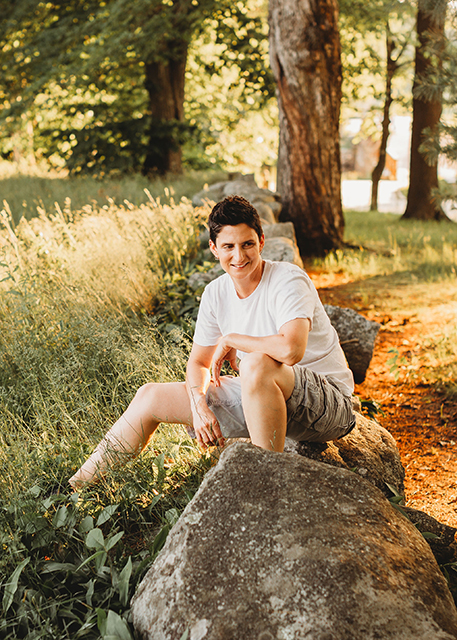

About

Steff Higgins writes books featuring LGBTQ+ characters for kids and adults who didn't see themselves in books growing up. They directed The Gay Marriage Thing documentary about a lesbian couple weathering the fight for equal marriage in Massachusetts. Steff was selected for a #QueerKidlit mentorship and has been a finalist for the Lambda Literary Writer's Retreat and a We Need Diverse Books mentorship. They served on the board of the MetroWest Writer’s Guild and volunteer with SpeakOut Boston. Steff is represented by Paige Terlip at Starling Literary + Media.
With a BA in Communications from The University of New Hampshire and an MA in Visual Media Arts from Emerson College, Steff has experience in all aspects of storytelling. Steff’s documentary The Gay Marriage Thing (Cinema Guild, Amazon) was an official selection at the Boston LGBTQ+ Film Festival, the Chicago LGBTQ+ Film Festival, and has been screened internationally.
Originally from Maine, Steff lives outside Boston with their wife and kids. If they aren’t writing, Steff can be found reading, watching movies and TV, working out, or biking with their family.
Fun Facts:
- Steff delivered copies of The Gay Marriage Thing to each Massachusetts legislator during the fight for equal marriage in that state.
- Their thesis film Drive Thru Love won an EVVY at Emerson where they got to give an acceptance speech at the Emerson Cutler Majestic Theater. (They were so terrified their amazing director of photography agreed to come up with them.)
- Steff has been perfecting ear wiggling for as long as they’ve been writing.
- While Steff is writing, scenes play like movies in their head and it’s the best feeling ever.